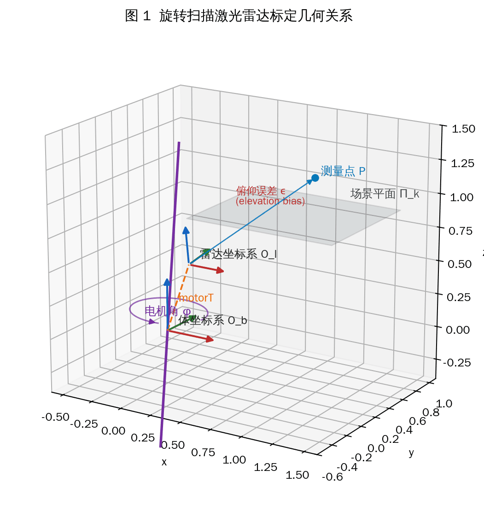
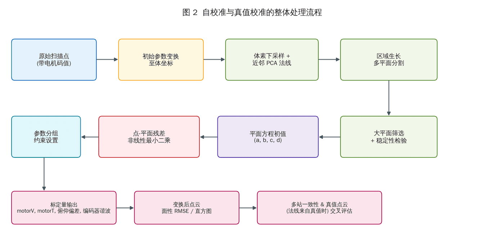
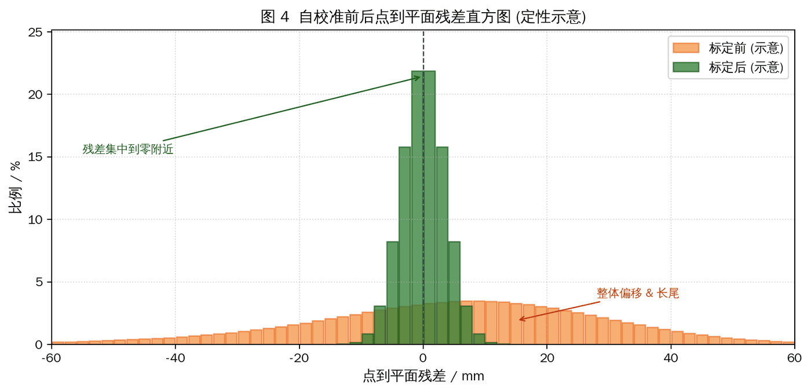

Calibration design for station-based scanning, mobile handheld laser scanning, and camera-LiDAR alignment.
Station-Based and Handheld LiDAR Calibration
A practical calibration workflow that diagnoses coupled scanner errors, simulates how those errors appear in point-cloud geometry, designs optimization and validation schemes, and supports one-capture joint camera-LiDAR extrinsic calibration in a high-precision calibration field.
Background
Station-based scanning and mobile handheld laser scanning both depend on stable geometric calibration. In practice, small sensor, mechanical, and alignment errors can combine into visible point-cloud defects: planar surfaces split into layers, walls or floors appear wavy, and repeated scans become difficult to register consistently.
The project goal was to present and solve the calibration problem at the system level: identify the observable failure modes, design a calibration plan that can be executed reliably, and produce a validation path that engineering teams can use without relying on fragile manual adjustment.
Problem
- Different error sources can produce similar surface defects, so the calibration plan must separate sensor error, mechanical-axis error, and capture alignment error.
- Station-based scanning needs stable plane quality after calibration, especially for walls, floors, ceilings, and other large structures used by downstream reconstruction.
- Mobile handheld laser scanning needs a repeatable field workflow that keeps sensor alignment consistent across capture sessions.
- Camera and LiDAR must be calibrated together so image observations and point-cloud geometry remain in one reliable coordinate relationship.
- The calibration scheme needed to stay explainable at the system level: problem diagnosis, data acquisition, optimization, validation, and acceptance criteria.
Approach
- Model the major error families at a system level, then use simulation to observe how each one changes the spatial distribution of point-cloud residuals.
- Use the simulated error distributions to guide parameter separation, optimization design, and the choice of validation signals.
- Design a calibration procedure around high-quality planar and geometric observations, so scanner calibration can be checked through residual concentration and cross-scan consistency.
- Add a high-precision calibration-field workflow for joint camera-LiDAR extrinsic calibration: the device captures the field once, and the shared observations are used to solve the camera-to-LiDAR relationship in the same calibration session.
- Define acceptance checks from residual statistics, visualized residual maps, and repeated-scan consistency rather than relying only on a single fitted value.
My Contribution
I led the problem formulation and calibration-scheme design, connecting observed point-cloud defects to the underlying scanner and sensor-alignment errors. The work focused on a practical engineering path: simulate the error behavior, design the data acquisition plan, choose optimization constraints, and define how the result should be accepted or rejected.
My main contributions included:
- Identifying the calibration failure modes for station-based scanning and mobile handheld laser scanning
- Designing error-distribution simulations to separate coupled error sources at the system level
- Defining the optimization and validation strategy for scanner calibration
- Designing the high-precision calibration-field workflow for one-capture joint camera-LiDAR extrinsic calibration
- Organizing residual-based diagnostics so calibration quality can be reviewed visually and statistically
Outcome
The completed scheme provides a calibration workflow for station-based scanning and mobile handheld laser scanners, covering problem diagnosis, data capture design, error simulation, optimization planning, and validation. It gives engineering teams a clear path from observed geometric defects to a calibrated scanner setup.
The joint camera-LiDAR calibration component closes an important gap: using a high-precision calibration field, one data capture is sufficient to estimate the shared extrinsic relationship and keep image and point-cloud observations aligned for downstream reconstruction workflows.



